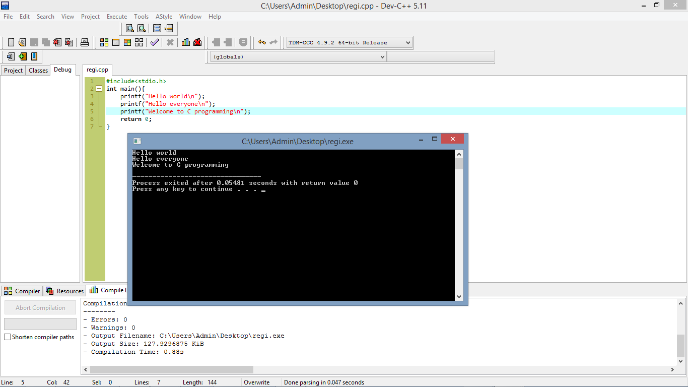
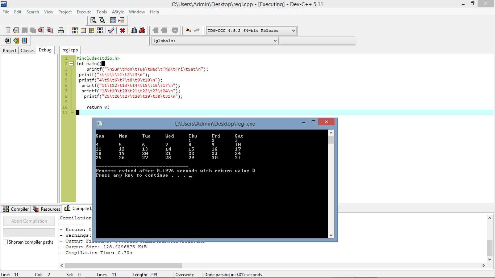
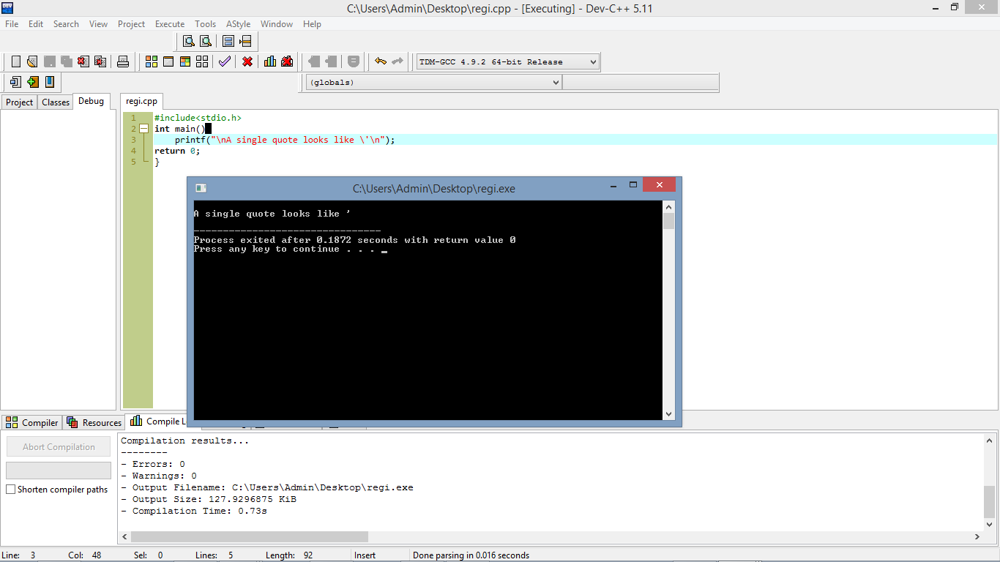

Escape sequence in C
This particular escape sequence (\n) tells the program to add a new line.
Take a look at the following program statement. How many new lines are added to standard output with this one printf() function?
printf("\nC you later\n");
This printf() function adds two new lines for formatting purposes. Before any text is shown, the program outputs a new line.
After the text is written to standard output, in this case the computer screen, another new line is written.
Describes some common escape sequences.
Escape Sequence:
\n :Creates a new line
\t :Moves the cursor to the next tab
\r :Moves the cursor to the beginning of the current line
\\ :Inserts a backslash
\" :Inserts a double quote
\' :Inserts a single quote
Escape Sequence \n
Escape Sequence \t
Escape sequence \t moves the cursor to the next tab space.
This escape sequence is useful for formatting output in many ways. For example, a common formatting desire is to create columns in your output, as the following program statements demonstrate.
As shown in Figure , the preceding program statements create formatted columns that display a sample calendar month.
Escape Sequence \r
You may find the escape sequence \r useful for some formatting tasks when the cursor’s position is of importance, especially with printed output because a printer can overwrite text
already printing.
The following program code demonstrates how it works; the output is shown in the figure
Escape Sequence \\
Escape sequence \\ inserts a backslash into your text. This may seem unnecessary at first, but remember that whenever the program reads a backslash in a printf() function, it expects to see a valid escape character right after it. In other words, the backslash character (\) is a special character in the printf() function; if you need to display a backslash in your text, you must use this escape sequence.
The following program statement demonstrates escape sequence \\.
The output is shown in Figure
Escape Sequence \"
Another reserved character in the printf() function is the double quote (") character. To insert a quote into your outputted text, use the escape sequence \" as demonstrated in the following program statement.
The output is shown in Figure
Escape Sequence \'
Similar to the double quote escape sequence (\") is the single quote (also called an apostrophe) escape sequence (\'). To insert a single quote into your outputted text, use the escape sequence \' as demonstrated in the following program statement and in Figure
